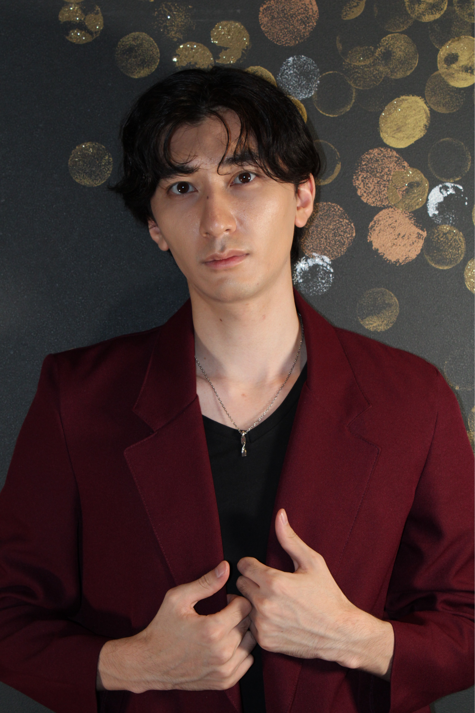

田川 颯眞
Soma TagawaActor / Musical Theatre Performer
日本とフランスで育まれた感性を武器に、舞台から映像まで幅広く活躍する俳優。
1999年7月31日生まれ。東京都出身。2歳より芸能活動を開始。子役として舞台・ドラマ・CM・吹替など幅広い作品に出演。日本とフランスで培った感性を武器に、現在はミュージカルを軸に舞台・映像・イマーシブシアターなどジャンルを横断して活動している。
2010年、11歳で家族の転勤に伴いフランス・パリへ移住。現地での生活を通して、美術・スポーツ・語学など多様な文化に触れ、国際的な感性を育む。2013年に帰国後は学業に専念し、2024年に青山学院大学国際政治経済学部を卒業。
2019年より本格的に俳優活動を再開。2023年より所属した事務所を契約満了に伴い円満退所。現在はヒラタオフィス フラッシュアップ所属。ミュージカルを軸に、イマーシブシアター、映像、モデル、SNSドラマ、声優など幅広い分野で活動し、日本のみならずフランスを視野に国内外で活躍の場を広げている。
東宝ミュージカルアカデミー11期修了。BPAP（Be Professional Artist Program）0期生。
主な出演歴
- 東宝ミュージカル『レ・ミゼラブル』ガブローシュ役、『エリザベート』少年ルドルフ役、『The Beautiful Game』リアム役、『ダーウィン・ヤング ～悪の起源～』アンサンブル。
- ブロードウェイミュージカル『春のめざめ』ハンシェン役、『ピピン』テオ役。
- 北島三郎特別公演『暴れ無法松』吉岡正造役、文化庁主催 日仏友好150周年記念公演『羽衣伝説』ナギ役、SASP『地域の歴史を知る歌劇 ～小栗忠順～』レオンス・ヴェルニー／青年小栗忠順役。
- Merry Creation『金平糖』主演・ハウト役、『さよならは大声で』トキタ役、『instant luv noodle』オフウエストエンド公演。
イマーシブシアター・映像・声優
- イマーシブ・フォート東京 メインキャスト、『CLUBナイトフィーバー』有坂役。
- NHK大河ドラマ『風林火山』長尾景虎（幼少期）役、『こちら葛飾区亀有公園前派出所』タク坊役、『ウルトラマンコスモス』。
- ディズニー『プーさんといっしょ』ルー役（レギュラー）、『魔法にかけられて』うさぎ、スカンクほか。洋画吹替『僕のピアノコンチェルト』主演 ヴィトス・フォン・ホルツェン役、『マダガスカル』マーティ（幼少期）役ほか。
- 自主企画『平熱大陸』演劇イベント、『27歳と25年』ミュージカルソロライブ、『位置について』ストレートプレイ。SNSショートドラマを中心に年間約30作品へ出演。
趣味・特技
趣味は海外旅行、ミュージカル鑑賞、サッカー観戦、ウィンタースポーツ、カラオケ、ゲーム。特技は歌唱、フランス語、英語、サッカー、スキー、早着替え、口笛、FPSゲーム、国籍や文化を問わず自然に信頼関係を築けるコミュニケーション力。
トップページへ戻る